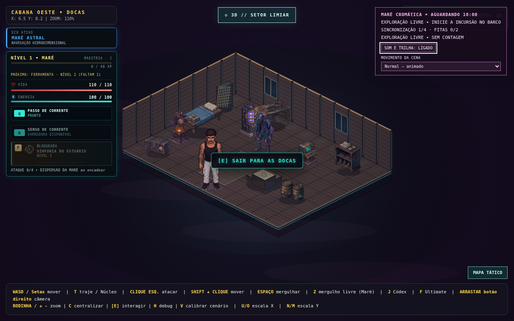
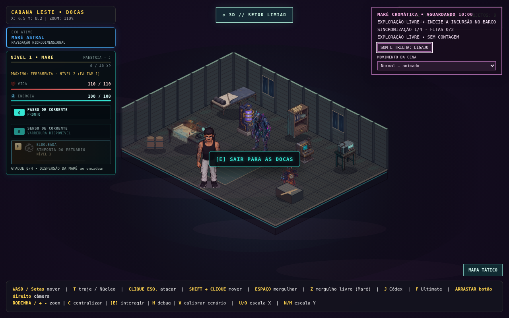
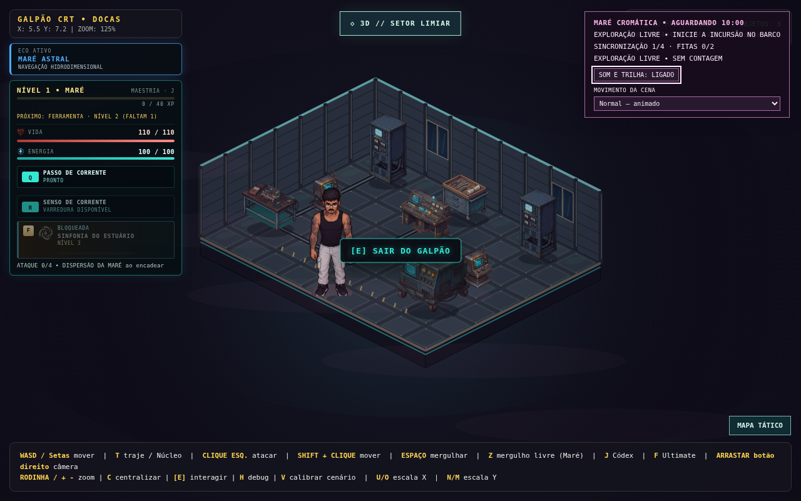

Docas · lote de 10 peças
Dez pinturas novas substituem onze móveis existentes (o rack é usado em dois pontos). A quantidade de obstáculos continua em 18. Sem carregar ou gravar saves. Rádio e rack têm emissão animada; madeira e tecido permanecem estáveis.
Carregando…
Encaixe nos três interiores — capturas do jogo real
01 · Abrigo dos pescadores

02 · Posto de escuta

03 · Oficina CRT

Abrir o jogo · Relatório do lote